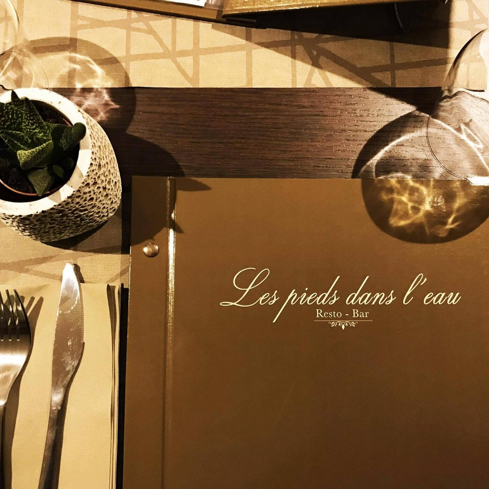
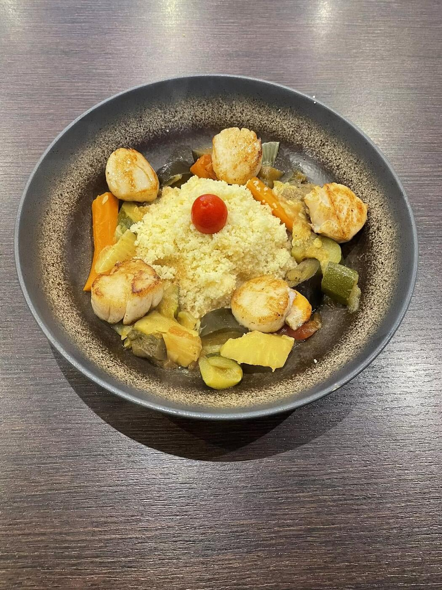

Sainte-Cécile · Camiers
Les pieds dans l'eau
Resto · Bar
Restaurant français sur l'esplanade de Sainte-Cécile
Réserver une table
Restaurant français sur l'esplanade de Sainte-Cécile
Réserver une tableUne table au bord de la plage, une cuisine française à l'assiette, et le bar pour prolonger le moment.

Les pieds dans l'eau, c'est le restaurant de Sainte-Cécile, à Camiers : on s'y installe en salle ou en terrasse, le temps d'un déjeuner, d'un dîner ou d'un verre face à la mer.
Sur place, à l'intérieur ou dehors aux beaux jours.
Fermé le mardi soir et le mercredi.
Par téléphone au 03 21 84 07 97.

Le restaurant français de Sainte-Cécile, en salle ou en terrasse, à deux pas du sable.
Esplanade de Sainte-Cécile · 62176 Camiers
Fermé le mardi soir et le mercredi